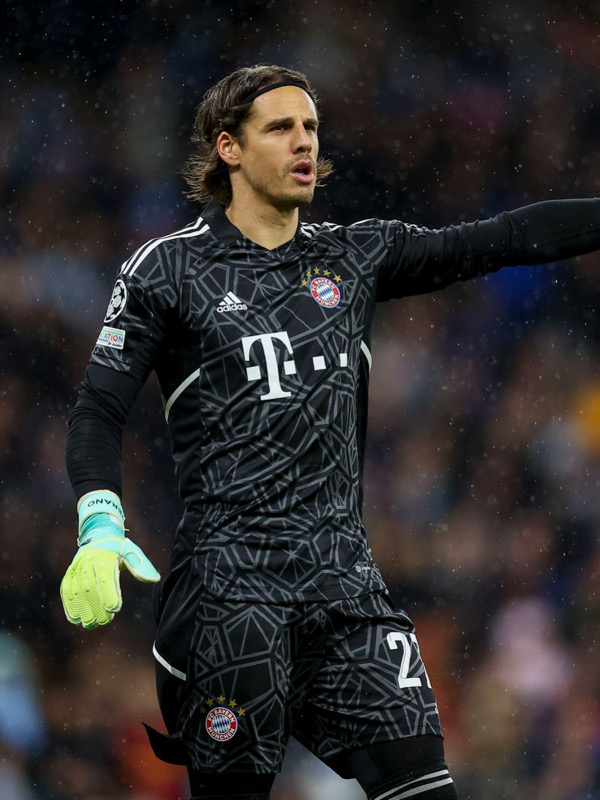

Yann Sommer
Player Information
First Name: Yann
Last Name: Sommer
Number: 27
Date of Birth: December 17, 1988
Age: 34
Height: 183cm / 6'0"
Dominant Foot: Right
Nationality: Switzerland
Positions: GK
Background
Sommer started his career at FC Herrliberg. He then joined Basel's youth team in 2005. He made his professional appearance in Basel, in 2009. After success in Base, Sommer joined Borussia Monchengladbach in 2014. There, he became a starting goalkeeper and proved himself as a solid player on the big stage. In 2022, Bayern signed Sommer to replace Manuel Neuer, who got injured. Sommer has been Bayern's starting goalkeeper since then.
Statistics
Yann Sommer played for Borussia Monchengladbach during the 2021-22 season. Below are his statistics for that Bundesliga season:
- Appearances: 33
- Goals: 0
- Assists: 1
- Yellow Cards: 2
- Red Cards: 0
Play Style
Yann Sommer is a defensive Goalkeeper with quick reflexes and jumping ability. He tends to stay inside the box and prefers to play close to Bayern's goal. Even though he is a lot shorter than typical Goalkeepers, he compensates for that with his reflexes and game IQ. Sommer is able to read the game and predict the most likely location of where the ball is going to go. This, in turn, allows him to take advantage of his reflexes and make important saves and catches for the team. Thus, he doesn't even need to have an average Goalkeeper's height. Some concerns regarding his play style were centered around his ability to handle the ball. He is not as good as Manuel Neuer when it comes to passing or dribbling the ball. Thus, Bayern Munich have often struggled when they're pressured, since Sommer can't offer himself as a composed outlet to recycle the ball in possession. Nevertheless, Sommer has been crucial in lots of moment for Bayern, making important, game-changing, saves for the team..